Europa / ridged ice plain
Needles lidar supplies the graben layout; the Cable Mountain scan provides wall modules. Fissure outlines include terrestrial donor data. These are the later textured Godot renders, with baked scan relief, photographic surface detail and per-body shading.
Evidence and provenance
Camera and capture notes · Triangle and wall counts
Some historical scan donors have no stated redistribution license (Mirror Fault / Volcanic Tablelands). These render archives preserve provenance; they do not grant a license to extract or reuse those donor meshes. The adapted browser chaos prototype excludes Mirror Fault.
Final views and visual comparisons


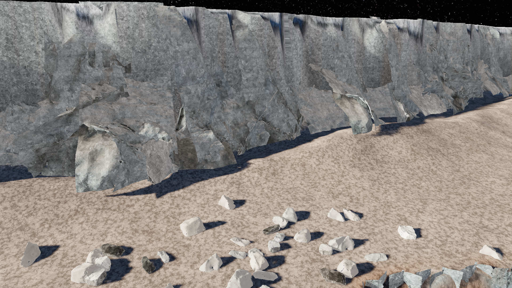

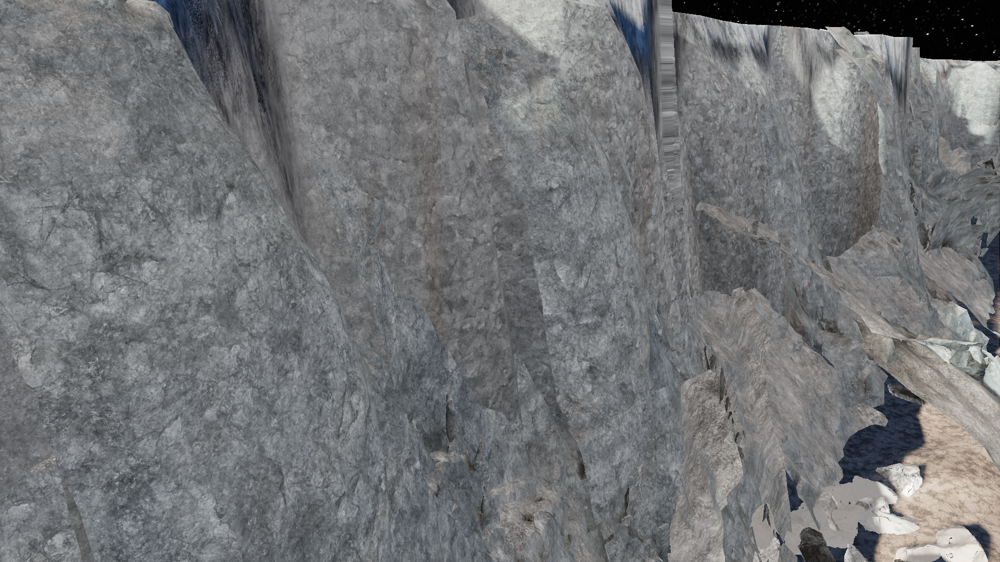

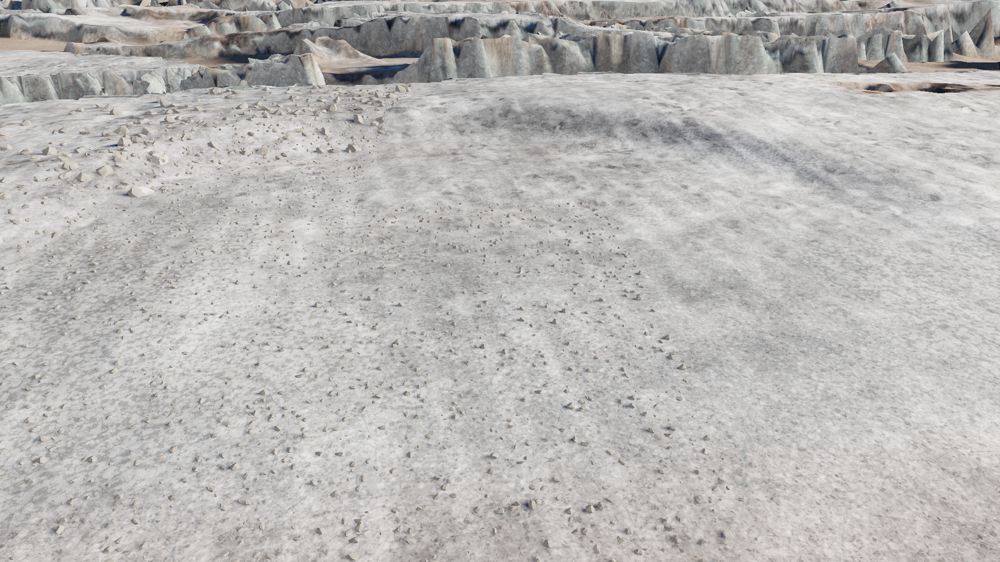

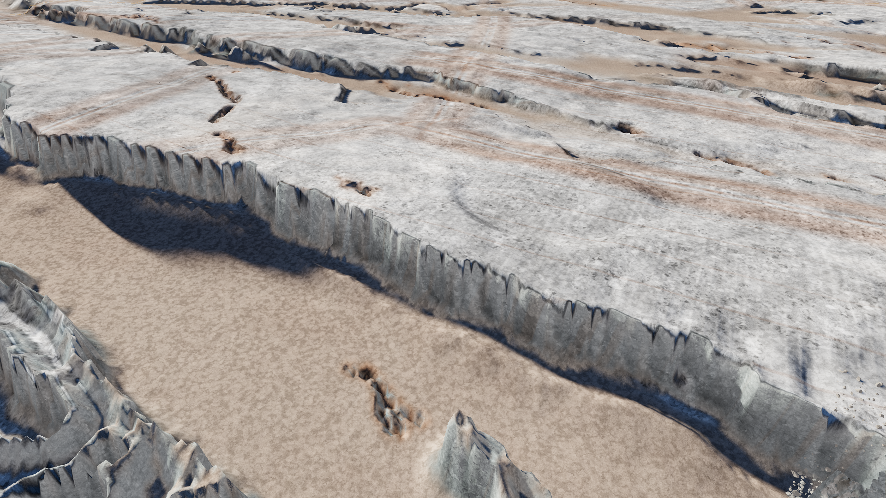

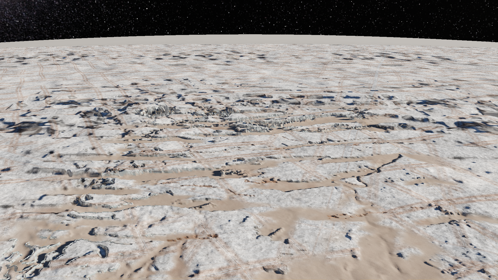

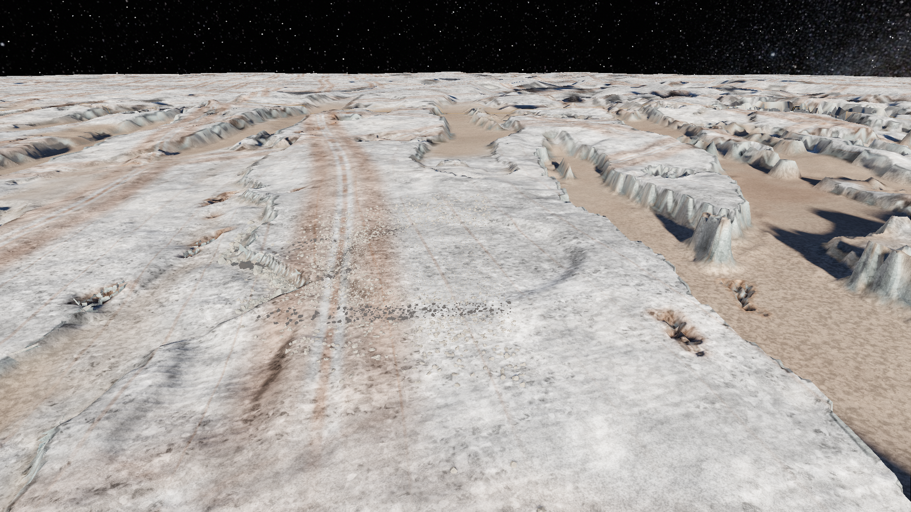

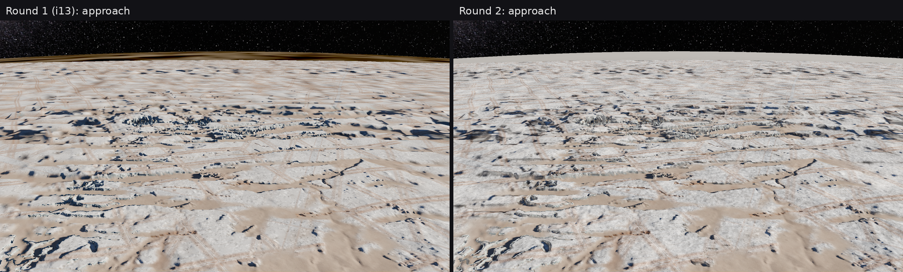

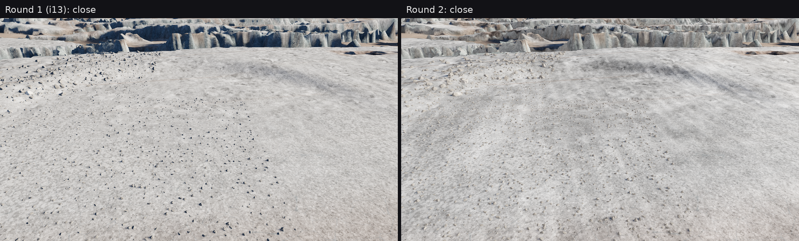

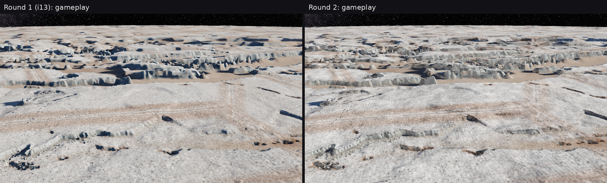

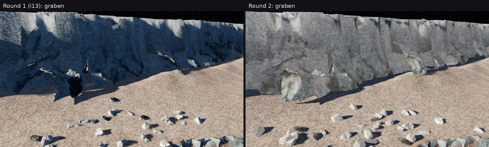

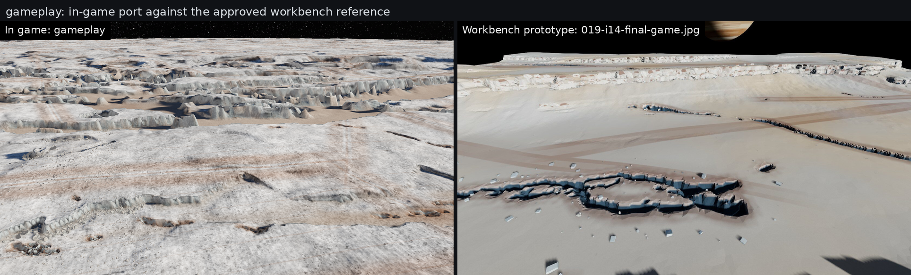

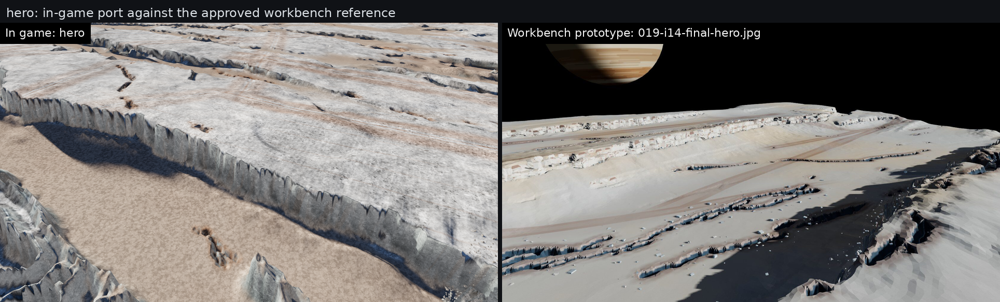

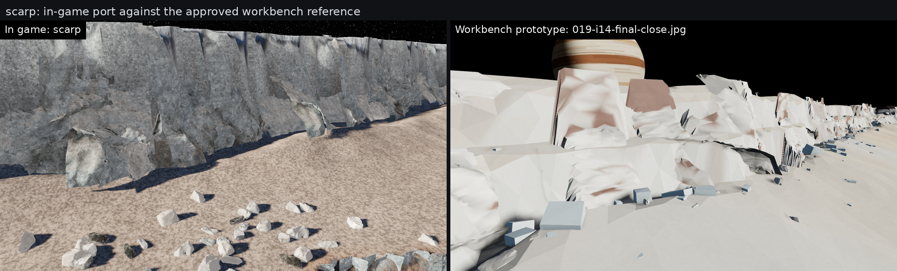

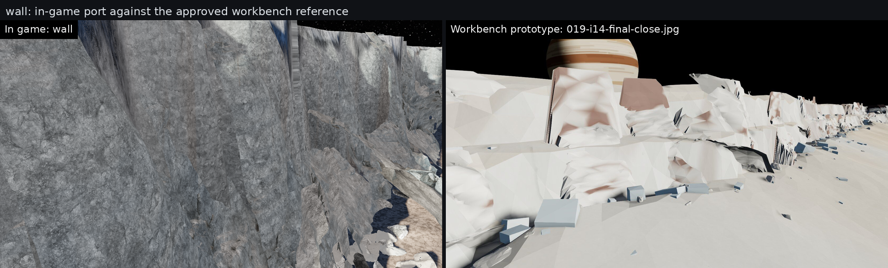
Earlier scan-built chaos prototype (adapted) · Recovered prompts